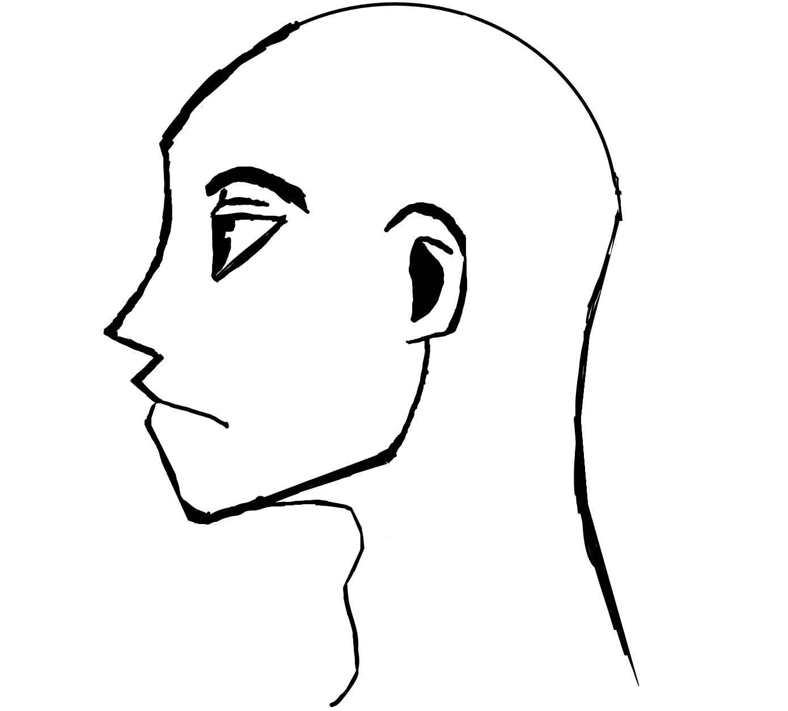

Concepts
Perhaps my favorite thing to do on my free time is designing and writing, this section of my website shows
my writing projects and designs/concepts.
In Eldritch Incident:1948 there's was a cutscene that got cut because we didn't have enough time to
implement it. It was supposed to be a scene of Nikolas giving some more background information to the crew
you play as. This was sketch of how he would've been drawn.

One of the 3D assignments we did was make our dream room in a website called "Tinkercad" by doing this, it allowed me to expand my 3D abilities and model within the website. This is my room.

As the end of this assignment came our instructor introduced us to Blender, another 3D modeling tool. This is where we learned the basic fundamentals of Blender and 3D art as a whole. Our class was tasked with making a donut and a mug to go alongside it, this was mine. I learned the basic fundamentals of blender and how to export my creations into Godot, Unity, and Unreal.

One of my newer projects is a story called Dead Grid Nomads it takes place after an event known as The Reset where humanity was changed into a wasteland that hadn't seen an type of technological or ecological growth in decades. This story follows Enzo, a high school graduate in the US, he tries to find out what caused The Reset and plans to change this new world into something better.